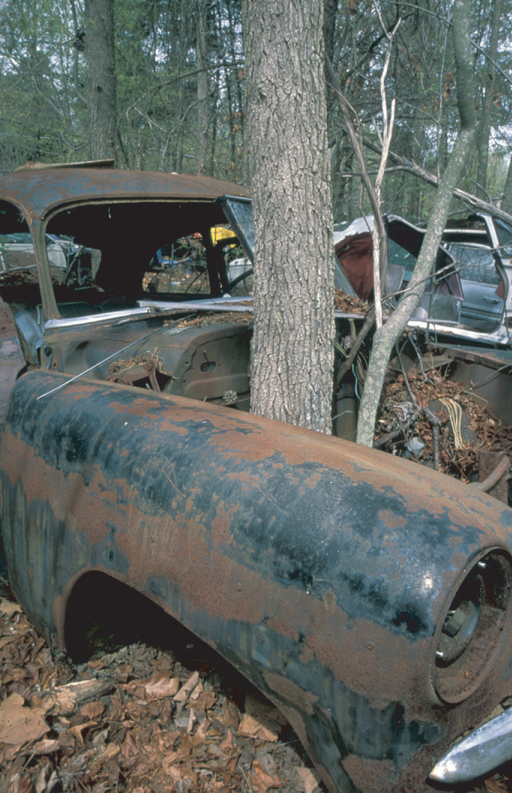
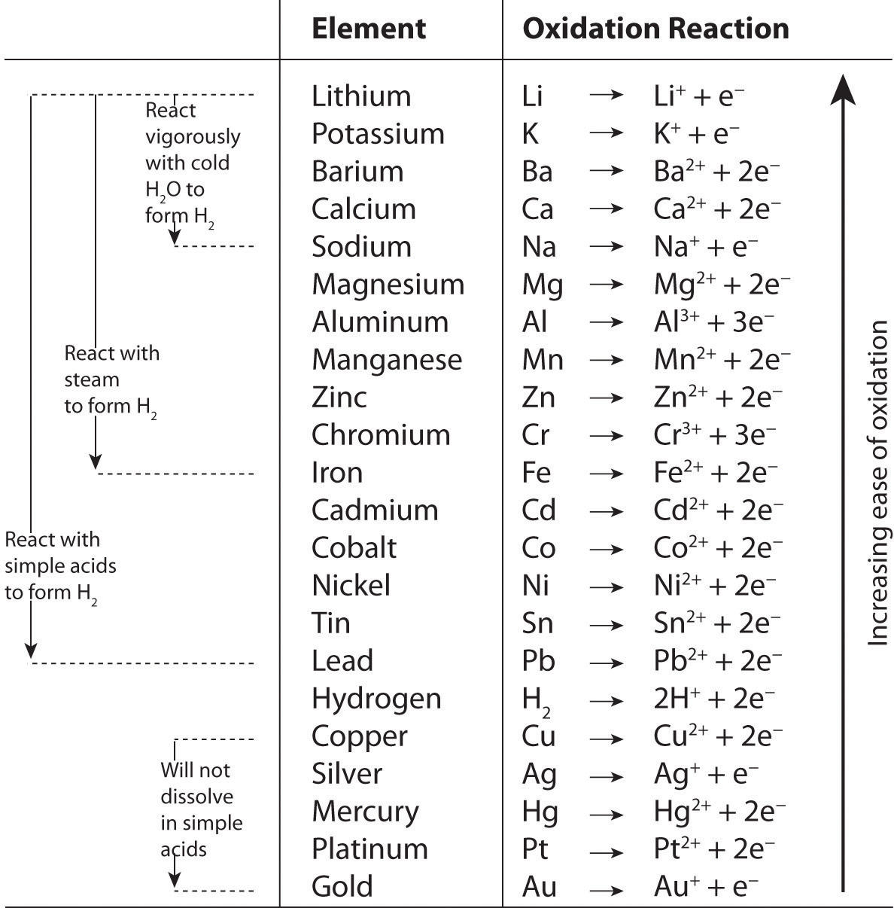

We described the defining characteristics of oxidation–reduction, or redox, reactions in Chapter 3 "Chemical Reactions". Most of the reactions we considered there were relatively simple, and balancing them was straightforward. When oxidation–reduction reactions occur in aqueous solution, however, the equations are more complex and can be more difficult to balance by inspection. Because a balanced chemical equation is the most important prerequisite for solving any stoichiometry problem, we need a method for balancing oxidation–reduction reactions in aqueous solution that is generally applicable. One such method uses oxidation states, and a second is referred to as the half-reaction method. We show you how to balance redox equations using oxidation states in this section; the half-reaction method is described in Chapter 19 "Electrochemistry".
To balance a redox equation using the oxidation state methodA procedure for balancing oxidation–reduction (redox) reactions in which the overall reaction is conceptually separated into two parts: an oxidation and a reduction., we conceptually separate the overall reaction into two parts: an oxidation—in which the atoms of one element lose electrons—and a reduction—in which the atoms of one element gain electrons. Consider, for example, the reaction of Cr2+(aq) with manganese dioxide (MnO2) in the presence of dilute acid. Equation 4.54 is the net ionic equation for this reaction before balancing; the oxidation state of each element in each species has been assigned using the procedure described in Section 3.5 "Classifying Chemical Reactions":
Equation 4.54
Notice that chromium is oxidized from the +2 to the +3 oxidation state, while manganese is reduced from the +4 to the +2 oxidation state. We can write an equation for this reaction that shows only the atoms that are oxidized and reduced:
Equation 4.55
Cr2+ + Mn4+ → Cr3+ + Mn2+The oxidation can be written as
Equation 4.56
Cr2+ → Cr3+ + e−and the reduction as
Equation 4.57
Mn4+ + 2e− → Mn2+For the overall chemical equation to be balanced, the number of electrons lost by the reductant must equal the number gained by the oxidant. We must therefore multiply the oxidation and the reduction equations by appropriate coefficients to give us the same number of electrons in both. In this example, we must multiply the oxidation equation by 2 to give
Equation 4.58
2Cr2+ → 2Cr3+ + 2e−In a balanced redox reaction, the number of electrons lost by the reductant equals the number of electrons gained by the oxidant.
The number of electrons lost in the oxidation now equals the number of electrons gained in the reduction:
Equation 4.59
We then add the equations for the oxidation and the reduction and cancel the electrons on both sides of the equation, using the actual chemical forms of the reactants and products:
Equation 4.60
Although the electrons cancel and the metal atoms are balanced, the total charge on the left side of the equation (+4) does not equal the charge on the right side (+8). Because the reaction is carried out in the presence of aqueous acid, we can add H+ as necessary to either side of the equation to balance the charge. By the same token, if the reaction were carried out in the presence of aqueous base, we could balance the charge by adding OH− as necessary to either side of the equation to balance the charges. In this case, adding four H+ ions to the left side of the equation gives
Equation 4.61
2Cr2+(aq) + MnO2(s) + 4H+(aq) → 2Cr3+(aq) + Mn2+(aq)Although the charges are now balanced, we have two oxygen atoms on the left side of the equation and none on the right. We can balance the oxygen atoms without affecting the overall charge balance by adding H2O as necessary to either side of the equation. Here, we need to add two H2O molecules to the right side:
Equation 4.62
2Cr2+(aq) + MnO2(s) + 4H+(aq) → 2Cr3+(aq) + Mn2+(aq) + 2H2O(l)Although we did not explicitly balance the hydrogen atoms, we can see by inspection that the overall chemical equation is now balanced. All that remains is to check to make sure that we have not made a mistake. This procedure for balancing reactions is summarized in Table 4.4 "Procedure for Balancing Oxidation–Reduction Reactions by the Oxidation State Method" and illustrated in Example 17.
Table 4.4 Procedure for Balancing Oxidation–Reduction Reactions by the Oxidation State Method
|
Arsenic acid (H3AsO4) is a highly poisonous substance that was once used as a pesticide. The reaction of elemental zinc with arsenic acid in acidic solution yields arsine (AsH3, a highly toxic and unstable gas) and Zn2+(aq). Balance the equation for this reaction using oxidation states:
H3AsO4(aq) + Zn(s) → AsH3(g) + Zn2+(aq)Given: reactants and products in acidic solution
Asked for: balanced chemical equation using oxidation states
Strategy:
Follow the procedure given in Table 4.4 "Procedure for Balancing Oxidation–Reduction Reactions by the Oxidation State Method" for balancing a redox equation using oxidation states. When you are done, be certain to check that the equation is balanced.
Solution:
Assign oxidation states using the procedure described in Section 3.5 "Classifying Chemical Reactions" and determine which atoms change oxidation state. The oxidation state of arsenic in arsenic acid is +6, and the oxidation state of arsenic in arsine is −3. Conversely, the oxidation state of zinc in elemental zinc is 0, and the oxidation state of zinc in Zn2+(aq) is +2:
Write separate equations for oxidation and reduction. The arsenic atom in H3AsO4 is reduced from the +5 to the −3 oxidation state, which requires the addition of eight electrons:
Each zinc atom in elemental zinc is oxidized from 0 to +2, which requires the loss of two electrons per zinc atom:
Multiply the oxidation and reduction equations by appropriate coefficients so that both contain the same number of electrons. The reduction equation has eight electrons, and the oxidation equation has two electrons, so we need to multiply the oxidation equation by 4 to obtain
Reduction (× 1): As5+ + 8e– → As3– Oxidation (× 4): 4Zn0 → 4Zn2+ + 8e–Write the oxidation and reduction equations showing the actual chemical forms of the reactants and the products, adjusting coefficients as necessary to give the numbers of atoms shown in step 4. Inserting the actual chemical forms of arsenic and zinc and adjusting the coefficients gives
Reduction: H3AsO4(aq) + 8e– → AsH3(g) Oxidation: 4Zn(s) → 4Zn2+(aq) + 8e–Add the two equations and cancel the electrons. The sum of the two equations in step 5 is
which then yields
H3AsO4(aq) + 4Zn(s) → AsH3(g) + 4Zn2+(aq)Balance the charge by adding H+or OH−ions as necessary for reactions in acidic or basic solution, respectively. Because the reaction is carried out in acidic solution, we can add H+ ions to whichever side of the equation requires them to balance the charge. The overall charge on the left side is zero, and the total charge on the right side is 4 × (+2) = +8. Adding eight H+ ions to the left side gives a charge of +8 on both sides of the equation:
H3AsO4(aq) + 4Zn(s) + 8H+(aq) → AsH3(g) + 4Zn2+(aq)Balance the oxygen atoms by adding H2O molecules to one side of the equation. There are 4 O atoms on the left side of the equation. Adding 4 H2O molecules to the right side balances the O atoms:
H3AsO4(aq) + 4Zn(s) + 8H+(aq) → AsH3(g) + 4Zn2+(aq) + 4H2O(l)Although we have not explicitly balanced H atoms, each side of the equation has 11 H atoms.
The balanced chemical equation for the reaction is therefore:
H3AsO4(aq) + 4Zn(s) + 8H+(aq) → AsH3(g) + 4Zn2+(aq) + 4H2O(l)Exercise
Copper commonly occurs as the sulfide mineral CuS. The first step in extracting copper from CuS is to dissolve the mineral in nitric acid, which oxidizes the sulfide to sulfate and reduces nitric acid to NO. Balance the equation for this reaction using oxidation states:
CuS(s) + H+(aq) + NO3−(aq) → Cu2+(aq) + NO(g) + SO42−(aq)Answer: 3CuS(s) + 8H+(aq) + 8NO3−(aq) → 3Cu2+(aq) + 8NO(g) + 3SO42−(aq) + 4H2O(l)
Reactions in basic solutions are balanced in exactly the same manner. To make sure you understand the procedure, consider Example 18.
The commercial solid drain cleaner, Drano, contains a mixture of sodium hydroxide and powdered aluminum. The sodium hydroxide dissolves in standing water to form a strongly basic solution, capable of slowly dissolving organic substances, such as hair, that may be clogging the drain. The aluminum dissolves in the strongly basic solution to produce bubbles of hydrogen gas that agitate the solution to help break up the clogs. The reaction is as follows:
Al(s) + H2O(aq) → [Al(OH)4]−(aq) + H2(g)Balance this equation using oxidation states.
Given: reactants and products in a basic solution
Asked for: balanced chemical equation
Strategy:
Follow the procedure given in Table 4.4 "Procedure for Balancing Oxidation–Reduction Reactions by the Oxidation State Method" for balancing a redox reaction using oxidation states. When you are done, be certain to check that the equation is balanced.
Solution:
We will apply the same procedure used in Example 17 but in a more abbreviated form.
The oxidation state of aluminum changes from 0 in metallic Al to +3 in [Al(OH)4]−. The oxidation state of hydrogen changes from +1 in H2O to 0 in H2. Aluminum is oxidized, while hydrogen is reduced:
Multiply the reduction equation by 3 to obtain an equation with the same number of electrons as the oxidation equation:
Reduction: 3H+ + 3e– → 3H0 (in H2) Oxidation: Al0 → Al3+ + 3e–Insert the actual chemical forms of the reactants and products, adjusting the coefficients as necessary to obtain the correct numbers of atoms as in step 4. Because a molecule of H2O contains two protons, in this case, 3H+ corresponds to 3/2H2O. Similarly, each molecule of hydrogen gas contains two H atoms, so 3H corresponds to 3/2H2.
Adding the equations and canceling the electrons gives
To remove the fractional coefficients, multiply both sides of the equation by 2:
2Al + 3H2O → 2[Al(OH)4]– + 3H2The right side of the equation has a total charge of −2, whereas the left side has a total charge of 0. Because the reaction is carried out in basic solution, we can balance the charge by adding two OH− ions to the left side:
2Al + 2OH– + 3H2O → 2[Al(OH)4]– + 3H2The left side of the equation contains five O atoms, and the right side contains eight O atoms. We can balance the O atoms by adding three H2O molecules to the left side:
2Al + 2OH– + 6H2O → 2[Al(OH)4]– + 3H2Be sure the equation is balanced:
Atoms: 2Al + 8O + 14H = 2Al + 8O + 14H Total charge: (2)(0) + (2)(–1) + (6)(0) = (2)(–1) + (3)(0) −2 = −2The balanced chemical equation is therefore
2Al(s) + 2OH–(aq) + 6H2O(l) → 2[Al(OH)4]–(aq) + 3H2(g)Thus 3 mol of H2 gas are produced for every 2 mol of Al.
Exercise
The permanganate ion reacts with nitrite ion in basic solution to produce manganese(IV) oxide and nitrate ion. Write a balanced chemical equation for the reaction.
Answer: 2MnO4−(aq) + 3NO2−(aq) + H2O(l) → 2MnO2(s) + 3NO3−(aq) + 2OH−(aq)
As suggested in Example 17 and Example 18, a wide variety of redox reactions are possible in aqueous solutions. The identity of the products obtained from a given set of reactants often depends on both the ratio of oxidant to reductant and whether the reaction is carried out in acidic or basic solution, which is one reason it can be difficult to predict the outcome of a reaction. Because oxidation–reduction reactions in solution are so common and so important, however, chemists have developed two general guidelines for predicting whether a redox reaction will occur and the identity of the products:
Species in high oxidation states act as oxidants, whereas species in low oxidation states act as reductants.
When an aqueous solution of a compound that contains an element in a high oxidation state is mixed with an aqueous solution of a compound that contains an element in a low oxidation state, an oxidation–reduction reaction is likely to occur.
A widely encountered class of oxidation–reduction reactions is the reaction of aqueous solutions of acids or metal salts with solid metals. An example is the corrosion of metal objects, such as the rusting of an automobile (Figure 4.20 "Rust Formation"). Rust is formed from a complex oxidation–reduction reaction involving dilute acid solutions that contain Cl− ions (effectively, dilute HCl), iron metal, and oxygen. When an object rusts, iron metal reacts with HCl(aq) to produce iron(II) chloride and hydrogen gas:
Equation 4.63
Fe(s) + 2HCl(aq) → FeCl2(aq) + H2(g)In subsequent steps, FeCl2 undergoes oxidation to form a reddish-brown precipitate of Fe(OH)3.
Figure 4.20 Rust Formation
The corrosion process involves an oxidation–reduction reaction in which metallic iron is converted to Fe(OH)3, a reddish-brown solid.
Many metals dissolve through reactions of this type, which have the general form
Equation 4.64
metal + acid → salt + hydrogenSome of these reactions have important consequences. For example, it has been proposed that one factor that contributed to the fall of the Roman Empire was the widespread use of lead in cooking utensils and pipes that carried water. Rainwater, as we have seen, is slightly acidic, and foods such as fruits, wine, and vinegar contain organic acids. In the presence of these acids, lead dissolves:
Equation 4.65
Pb(s) + 2H+(aq) → Pb2+(aq) + H2(g)Consequently, it has been speculated that both the water and the food consumed by Romans contained toxic levels of lead, which resulted in widespread lead poisoning and eventual madness. Perhaps this explains why the Roman Emperor Caligula appointed his favorite horse as consul!
Certain metals are oxidized by aqueous acid, whereas others are oxidized by aqueous solutions of various metal salts. Both types of reactions are called single-displacement reactionsA chemical reaction in which an ion in solution is displaced through oxidation of a metal., in which the ion in solution is displaced through oxidation of the metal. Two examples of single-displacement reactions are the reduction of iron salts by zinc (Equation 4.66) and the reduction of silver salts by copper (Equation 4.67 and Figure 4.21 "The Single-Displacement Reaction of Metallic Copper with a Solution of Silver Nitrate"):
Equation 4.66
Zn(s) + Fe2+(aq) → Zn2+(aq) + Fe(s)Equation 4.67
Cu(s) + 2Ag+(aq) → Cu2+(aq) + 2Ag(s)The reaction in Equation 4.66 is widely used to prevent (or at least postpone) the corrosion of iron or steel objects, such as nails and sheet metal. The process of “galvanizing” consists of applying a thin coating of zinc to the iron or steel, thus protecting it from oxidation as long as zinc remains on the object.
Figure 4.21 The Single-Displacement Reaction of Metallic Copper with a Solution of Silver Nitrate

When a copper coil is placed in a solution of silver nitrate, silver ions are reduced to metallic silver on the copper surface, and some of the copper metal dissolves. Note the formation of a metallic silver precipitate on the copper coil and a blue color in the surrounding solution due to the presence of aqueous Cu2+ ions. (Water molecules and nitrate ions have been omitted from molecular views of the solution for clarity.)
By observing what happens when samples of various metals are placed in contact with solutions of other metals, chemists have arranged the metals according to the relative ease or difficulty with which they can be oxidized in a single-displacement reaction. For example, we saw in Equation 4.66 and Equation 4.67 that metallic zinc reacts with iron salts, and metallic copper reacts with silver salts. Experimentally, it is found that zinc reacts with both copper salts and silver salts, producing Zn2+. Zinc therefore has a greater tendency to be oxidized than does iron, copper, or silver. Although zinc will not react with magnesium salts to give magnesium metal, magnesium metal will react with zinc salts to give zinc metal:
Equation 4.68
Equation 4.69
Mg(s) + Zn2+(aq) → Mg2+(aq) + Zn(s)Magnesium has a greater tendency to be oxidized than zinc does.
Pairwise reactions of this sort are the basis of the activity seriesA list of metals and hydrogen in order of their relative tendency to be oxidized. (Figure 4.22 "The Activity Series"), which lists metals and hydrogen in order of their relative tendency to be oxidized. The metals at the top of the series, which have the greatest tendency to lose electrons, are the alkali metals (group 1), the alkaline earth metals (group 2), and Al (group 13). In contrast, the metals at the bottom of the series, which have the lowest tendency to be oxidized, are the precious metals or coinage metals—platinum, gold, silver, and copper, and mercury, which are located in the lower right portion of the metals in the periodic table. You should be generally familiar with which kinds of metals are active metalsThe metals at the top of the activity series, which have the greatest tendency to be oxidized. (located at the top of the series) and which are inert metalsThe metals at the bottom of the activity series, which have the least tendency to be oxidized. (at the bottom of the series).
Figure 4.22 The Activity Series
When using the activity series to predict the outcome of a reaction, keep in mind that any element will reduce compounds of the elements below it in the series. Because magnesium is above zinc in Figure 4.22 "The Activity Series", magnesium metal will reduce zinc salts but not vice versa. Similarly, the precious metals are at the bottom of the activity series, so virtually any other metal will reduce precious metal salts to the pure precious metals. Hydrogen is included in the series, and the tendency of a metal to react with an acid is indicated by its position relative to hydrogen in the activity series. Only those metals that lie above hydrogen in the activity series dissolve in acids to produce H2. Because the precious metals lie below hydrogen, they do not dissolve in dilute acid and therefore do not corrode readily. Example 19 demonstrates how a familiarity with the activity series allows you to predict the products of many single-displacement reactions. We will return to the activity series when we discuss oxidation–reduction reactions in more detail in Chapter 19 "Electrochemistry".
Using the activity series, predict what happens in each situation. If a reaction occurs, write the net ionic equation.
Given: reactants
Asked for: overall reaction and net ionic equation
Strategy:
A Locate the reactants in the activity series in Figure 4.22 "The Activity Series" and from their relative positions, predict whether a reaction will occur. If a reaction does occur, identify which metal is oxidized and which is reduced.
B Write the net ionic equation for the redox reaction.
Solution:
A Aluminum is an active metal that lies above silver in the activity series, so we expect a reaction to occur. According to their relative positions, aluminum will be oxidized and dissolve, and silver ions will be reduced to silver metal. B The net ionic equation is as follows:
Al(s) + 3Ag+(aq) → Al3+(aq) + 3Ag(s)Recall from our discussion of solubilities that most nitrate salts are soluble. In this case, the nitrate ions are spectator ions and are not involved in the reaction.
A Lead is above hydrogen in the activity series, so the lead terminals will be oxidized, and the acid will be reduced to form H2. B From our discussion of solubilities, recall that Pb2+ and SO42− form insoluble lead(II) sulfate. In this case, the sulfate ions are not spectator ions, and the reaction is as follows:
Pb(s) + 2H+(aq) + SO42−(aq) → PbSO4(s) + H2(g)Lead(II) sulfate is the white solid that forms on corroded battery terminals.
Corroded battery terminals. The white solid is lead(II) sulfate, formed from the reaction of solid lead with a solution of sulfuric acid.
Exercise
Using the activity series, predict what happens in each situation. If a reaction occurs, write the net ionic equation.
Answer:
In oxidation–reduction reactions, electrons are transferred from one substance or atom to another. We can balance oxidation–reduction reactions in solution using the oxidation state method (Table 4.4 "Procedure for Balancing Oxidation–Reduction Reactions by the Oxidation State Method"), in which the overall reaction is separated into an oxidation equation and a reduction equation. Single-displacement reactions are reactions of metals with either acids or another metal salt that result in dissolution of the first metal and precipitation of a second (or evolution of hydrogen gas). The outcome of these reactions can be predicted using the activity series (Figure 4.22 "The Activity Series"), which arranges metals and H2 in decreasing order of their tendency to be oxidized. Any metal will reduce metal ions below it in the activity series. Active metals lie at the top of the activity series, whereas inert metals are at the bottom of the activity series.
Which elements in the periodic table tend to be good oxidants? Which tend to be good reductants?
If two compounds are mixed, one containing an element that is a poor oxidant and one with an element that is a poor reductant, do you expect a redox reaction to occur? Explain your answer. What do you predict if one is a strong oxidant and the other is a weak reductant? Why?
In each redox reaction, determine which species is oxidized and which is reduced:
Single-displacement reactions are a subset of redox reactions. In this subset, what is oxidized and what is reduced? Give an example of a redox reaction that is not a single-displacement reaction.
Of the following elements, which would you expect to have the greatest tendency to be oxidized: Zn, Li, or S? Explain your reasoning.
Of these elements, which would you expect to be easiest to reduce: Se, Sr, or Ni? Explain your reasoning.
Which of these metals produces H2 in acidic solution?
Using the activity series, predict what happens in each situation. If a reaction occurs, write the net ionic equation.
Balance each redox reaction under the conditions indicated.
Balance each redox reaction under the conditions indicated.
Using the activity series, predict what happens in each situation. If a reaction occurs, write the net ionic equation; then write the complete ionic equation for the reaction.
Using the activity series, predict what happens in each situation. If a reaction occurs, write the net ionic equation; then write the complete ionic equation for the reaction.
Dentists occasionally use metallic mixtures called amalgams for fillings. If an amalgam contains zinc, however, water can contaminate the amalgam as it is being manipulated, producing hydrogen gas under basic conditions. As the filling hardens, the gas can be released, causing pain and cracking the tooth. Write a balanced chemical equation for this reaction.
Copper metal readily dissolves in dilute aqueous nitric acid to form blue Cu2+(aq) and nitric oxide gas.
Classify each reaction as an acid–base reaction, a precipitation reaction, or a redox reaction, or state if there is no reaction; then complete and balance the chemical equation:
Classify each reaction as an acid–base reaction, a precipitation reaction, or a redox reaction, or state if there is no reaction; then complete and balance the chemical equation: